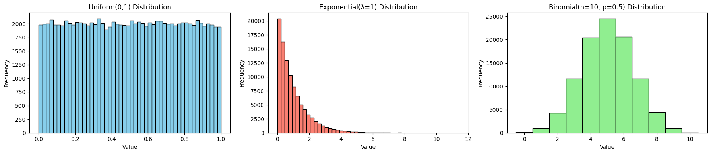
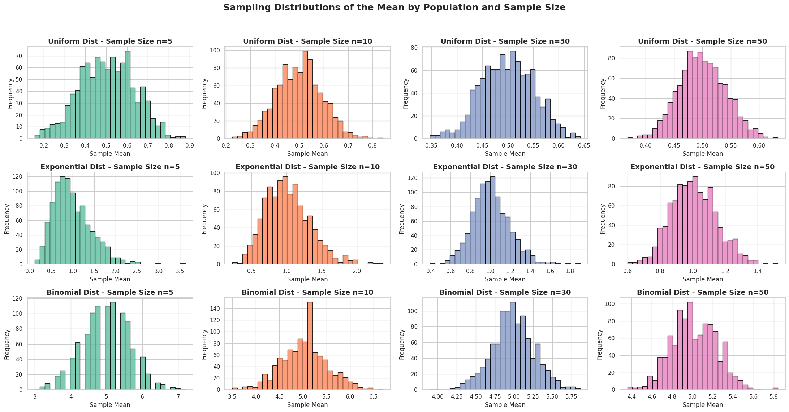

Problem 1
📊 Simulating Sampling Distributions
🎯 Objective
To demonstrate the Central Limit Theorem (CLT), we begin by generating large populations from various distributions:
- Uniform Distribution
- Exponential Distribution
- Binomial Distribution
Each dataset will represent a "population", from which we will later draw repeated random samples to study the behavior of their means.
🔢 Step 1: Generate Populations
Let: - \(N = 100000\) be the size of each simulated population.
We will define each population as follows:
- Uniform Distribution:
- Exponential Distribution:
- Binomial Distribution:
🧪 Python Code/ Visual

import numpy as np
import matplotlib.pyplot as plt
# Set seed for reproducibility
np.random.seed(42)
# Population size
N = 100_000
# --- Generate Populations ---
# 1. Uniform Distribution: U(0, 1)
population_uniform = np.random.uniform(low=0, high=1, size=N)
# 2. Exponential Distribution: Exp(λ=1)
population_exponential = np.random.exponential(scale=1.0, size=N)
# 3. Binomial Distribution: Binomial(n=10, p=0.5)
population_binomial = np.random.binomial(n=10, p=0.5, size=N)
# --- Plot Histograms ---
fig, axs = plt.subplots(1, 3, figsize=(18, 4))
# Uniform
axs[0].hist(population_uniform, bins=50, color='skyblue', edgecolor='black')
axs[0].set_title("Uniform(0,1) Distribution")
axs[0].set_xlabel("Value")
axs[0].set_ylabel("Frequency")
# Exponential
axs[1].hist(population_exponential, bins=50, color='salmon', edgecolor='black')
axs[1].set_title("Exponential(λ=1) Distribution")
axs[1].set_xlabel("Value")
axs[1].set_ylabel("Frequency")
# Binomial
axs[2].hist(population_binomial, bins=range(0,12), color='lightgreen', edgecolor='black', align='left')
axs[2].set_title("Binomial(n=10, p=0.5) Distribution")
axs[2].set_xlabel("Value")
axs[2].set_ylabel("Frequency")
plt.tight_layout()
plt.show()
🧠 Observations
-
The Uniform distribution is symmetric and flat.
-
The Exponential distribution is positively skewed, with a long tail.
-
The Binomial distribution appears discrete and approximately symmetric for \(p=0.5\), \(n=10\).
These variations in shape are crucial because, according to the Central Limit Theorem, the sampling distribution of the sample mean should approach a normal distribution, even if the underlying population is not normal.
📈 Sampling and Visualization
🎯 Objective
Now that we've simulated our population distributions, we move to the core demonstration of the Central Limit Theorem (CLT) by:
- Drawing repeated random samples of various sizes.
- Calculating sample means.
- Building and visualizing sampling distributions.
- Observing how they approach normality.
🔁 Step-by-Step Procedure
1. Select Sample Sizes
We will use the following sample sizes:
-
\(n = 5\)
-
\(n = 10\)
-
\(n = 30\)
-
\(n = 50\)
2. Sampling Process
Let: - \(R = 1000\) be the number of repetitions (samples drawn per sample size).
-
For each sample size \(n\), and each population:
-
Draw \(R\) samples of size \(n\).
-
Compute the sample mean \(\bar{X}\) for each.
-
Store these means to analyze their distribution.
🧪 Python Code
import numpy as np
import matplotlib.pyplot as plt
# Parameters
sample_sizes = [5, 10, 30, 50]
repeats = 1000
# Store results
sampling_results = {
"uniform": {},
"exponential": {},
"binomial": {}
}
# Sampling function
def simulate_sampling_distribution(population, name):
for n in sample_sizes:
means = []
for _ in range(repeats):
sample = np.random.choice(population, size=n, replace=False)
sample_mean = np.mean(sample)
means.append(sample_mean)
sampling_results[name][n] = means
# Run simulations
simulate_sampling_distribution(population_uniform, "uniform")
simulate_sampling_distribution(population_exponential, "exponential")
simulate_sampling_distribution(population_binomial, "binomial")
📊 Visualization
We will now plot the sampling distribution of the mean for each combination of:
-
Distribution: Uniform, Exponential, Binomial
-
Sample Size: \(n = 5, 10, 30, 50\)

import matplotlib.pyplot as plt
import seaborn as sns
# Seaborn style for aesthetics
sns.set(style="whitegrid")
# Plot sampling distributions
fig, axs = plt.subplots(3, 4, figsize=(22, 12))
distributions = ["uniform", "exponential", "binomial"]
titles = ["Uniform", "Exponential", "Binomial"]
colors = sns.color_palette("Set2", 4)
for i, dist in enumerate(distributions):
for j, n in enumerate(sample_sizes):
axs[i][j].hist(
sampling_results[dist][n],
bins=30,
color=colors[j],
edgecolor='black',
alpha=0.85
)
axs[i][j].set_title(f"{titles[i]} Dist - Sample Size n={n}", fontsize=14, fontweight='bold')
axs[i][j].set_xlabel("Sample Mean", fontsize=12)
axs[i][j].set_ylabel("Frequency", fontsize=12)
# Add an overall title
fig.suptitle("Sampling Distributions of the Mean by Population and Sample Size", fontsize=18, fontweight='bold')
plt.tight_layout(rect=[0, 0.03, 1, 0.95])
plt.show()
📚 Theoretical Background
According to the Central Limit Theorem, for a sufficiently large sample size \(n\):
The distribution of the sample mean \(\bar{X}\) tends toward a normal distribution, regardless of the shape of the population distribution, provided the variance \(\sigma^2\) is finite.
Mathematically:
- If \(X_1, X_2, \dots, X_n\) are i.i.d. with mean \(\mu\) and variance \(\sigma^2\), then:
🧠 Observations
- As \(n\) increases:
- The histograms of sample means become more bell-shaped.
- This occurs even when the original distribution is skewed, e.g., Exponential.
- The spread of the sampling distribution decreases with larger \(n\), consistent with:
🧪 Parameter Exploration
In this section, we explore how different parameters influence the behavior of sampling distributions under the Central Limit Theorem (CLT).
🔍 1. Effect of the Original Distribution Shape
- Key Insight: The more skewed or non-normal the original population is, the slower the convergence to a normal distribution.
- Visual Observation:
- Sampling distributions from the Exponential distribution (heavily skewed) take longer to appear normal.
- Sampling distributions from Uniform or Binomial (p ≈ 0.5) appear bell-shaped even at moderate sample sizes.
- CLT Implication:
- For highly non-normal populations, a larger \(n\) is needed for the sampling distribution of the mean to approximate normality.
📈 2. Influence of Sample Size on Normality
Let:
-
\(X_1, X_2, \dots, X_n\) be i.i.d. random variables with mean \(\mu\) and variance \(\sigma^2\)
-
\(\bar{X} = \frac{1}{n} \sum_{i=1}^n X_i\)
Then, by the Central Limit Theorem:
- Observation:
- As \(n\) increases, the shape of the sampling distribution becomes more symmetric and bell-shaped.
- The convergence is faster when the population is closer to normal.
📊 3. Role of Population Variance in Spread
- Standard Error (SE) of the sample mean is:
- Implications:
- Populations with larger variance \(\sigma^2\) yield wider sampling distributions.
- As sample size \(n\) increases, SE decreases, causing the sampling distribution to narrow.
📝 Summary Table
| Factor | Effect on Sampling Distribution |
|---|---|
| Shape of Original Distribution | Skewed → slower normal convergence |
| Sample Size (\(n\)) | Larger \(n\) → faster convergence, tighter distribution |
| Population Variance (\(\sigma^2\)) | Higher variance → wider spread in sample means |
📚 Interpretation
These effects are critical when: - Designing experiments: Choose a sufficiently large \(n\) based on the distribution shape. - Estimating parameters: Know that estimates are more precise when variance is low or \(n\) is high. - Communicating uncertainty: Larger spreads in sampling distributions indicate higher estimation uncertainty.
🌍 Practical Applications of the Central Limit Theorem
The Central Limit Theorem (CLT) plays a foundational role across many fields by enabling the use of normal approximation when analyzing sample means — even when the original data is not normally distributed.
📐 1. Estimating Population Parameters
-
When taking a sample of size \(n\) from a population with:
-
Mean \(\mu\)
-
Standard deviation \(\sigma\)
-
The sample mean \(\bar{X}\) is used to estimate the population mean:
- Due to CLT:
-
This allows us to:
-
Construct confidence intervals
- Perform hypothesis testing using \(z\)-scores.
✅ Use Case: Estimating the average height, income, or lifespan from survey data.
🏭 2. Quality Control in Manufacturing
- Suppose a factory produces parts with a target dimension (e.g., length = 5cm).
- Random samples of \(n\) units are taken periodically.
-
If the sample mean deviates significantly from the target, corrective action is taken.
-
Using CLT, the distribution of the sample mean allows creation of control charts:
- Define control limits at:
- This detects issues like:
- Machine misalignment
- Material flaws
- Process drift
✅ Use Case: Monitoring packaging weight, fluid volumes, or part dimensions.
💹 3. Financial Outcome Predictions
- Financial metrics (e.g., returns, costs, profits) often come from aggregates of many random variables.
- Thanks to CLT:
- The total return or average risk from a portfolio of assets approximates normality.
-
Enables use of tools like:
- Value-at-Risk (VaR)
- Monte Carlo simulations
-
Example:
✅ Use Case: Estimating probable gains/losses for investments over time.
🧠 Conclusion
The Central Limit Theorem enables: - Reliable estimation even from non-normal populations - Inferential power in small to medium sample sizes - Foundation for statistical decision-making in science, industry, and finance
📌 It's one of the most powerful bridges between theory and practice in statistics.